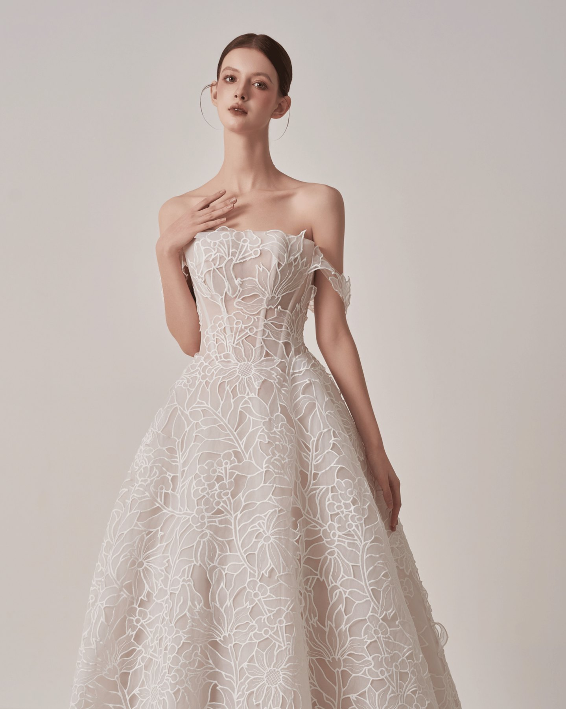
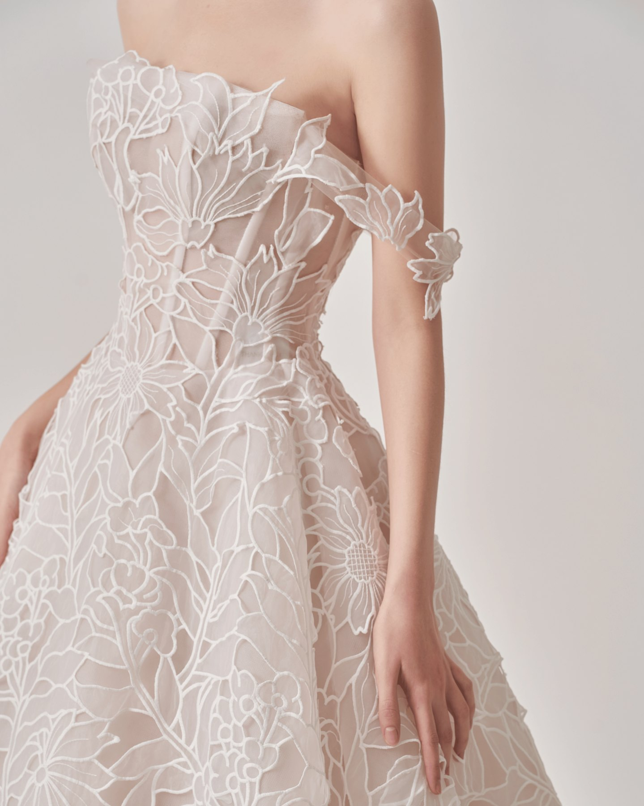
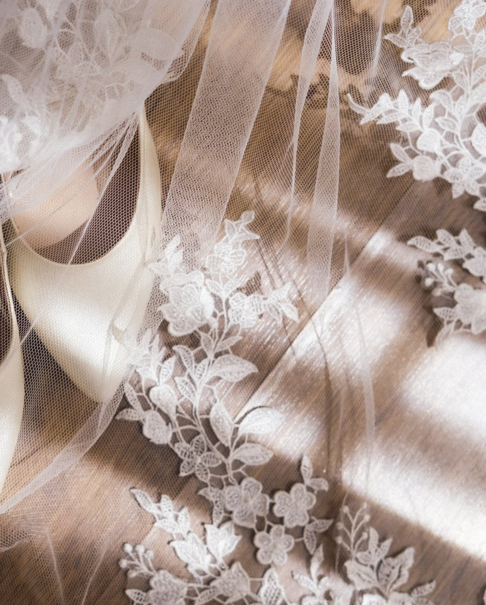
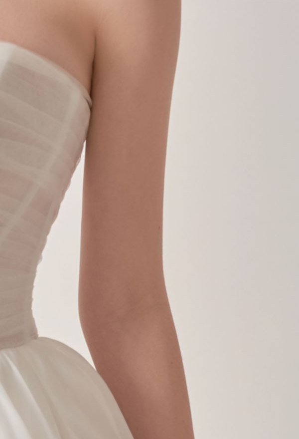

8 điều cô dâu cần biết trước khi quyết định chiếc váy cưới của mình. Đọc trước khi đi thử váy lần đầu.
Dolinhanh
Gửi cô dâu
Đừng chọn váy cưới chỉ vì “nó đẹp”.
Một chiếc váy có thể rất đẹp trên ảnh, trên mannequin, hoặc trên một cô dâu khác. Nhưng điều quan trọng là: nó có thực sự đẹp khi mặc lên chính bạn không?
Sau nhiều năm đứng trong phòng thử váy, chúng tôi nhận ra phần lớn cô dâu không chọn sai vì thiếu mẫu đẹp. Họ chọn sai vì bước vào buổi thử mà chưa biết mình đang tìm gì, chưa biết nên nhìn vào đâu, và chưa biết nên hỏi điều gì trước khi đặt cọc.
Cuốn này gói lại đúng những điều đó — tám phần, đọc hết trong mười lăm phút, dùng được ở bất cứ đâu bạn đi thử váy.
Dolinhanh Bridal
Dolinhanh Bridal · Hà Nội & TP. Hồ Chí Minh01
Bên trong cuốn này
Mục lục
01Đọc vị bản thân — tìm ra trước khi đi thử và lựa chọn
02Chuẩn bị gì trước buổi thử váy
03Nên thử bao nhiêu mẫu, thử theo thứ tự nào
04Form váy hợp dáng người
05Chi tiết trên váy cần đặc biệt chú ý
06Đánh giá chất liệu khi mặc trực tiếp
07Những câu hỏi cần hỏi trước khi đặt cọc
08Tránh chọn váy theo cảm xúc nhất thời
Cách dùng cuốn nàyBạn cứ lướt hết một lượt cho quen mắt trước đã. Trước buổi thử, mở lại phần 02 và 07 rồi chụp màn hình để sẵn trong điện thoại. Trong buổi thử, bạn tick dần từng ô — hết buổi là đã có đủ dữ kiện để quyết định, thay vì quyết định bằng cảm giác nhất thời.
The Bride's Dress Guide02
03
Đọc vị bản thân
Hiểu gu của mình. Hiểu cơ thể mình. Hiểu điều gì khiến mình đẹp nhất. Trước khi chọn một chiếc váy cưới, bạn hãy dành một chút thời gian để hiểu người sẽ mặc nó — chính bạn.
01 — Đọc vị gu
“Mình thực sự thích kiểu đẹp nào?” Gom 5–10 tấm ảnh váy bạn thích vào một album rồi để ý điểm lặp lại — cùng xoè to, cùng có ren, hay cùng trễ vai? Nhìn thêm tủ đồ ngày thường: bạn vốn tối giản hay bay bổng, kín đáo hay quyến rũ. Bài trắc nghiệm ở trang bên sẽ giúp bạn gọi tên gu của mình.
02 — Đọc vị body
“Tỷ lệ cơ thể mình như thế nào?” Đứng trước gương, so ba chỗ với nhau: vai — eo — hông. Chưa cần kết luận vội — phần 04 có bảng tra dáng nào hợp váy nào.
03 — Đọc vị điểm đẹp
“Mình muốn nhấn vào đâu, và muốn cân bằng điều gì?” Đây chính là câu khoe gì — giấu gì mà stylist chắc chắn sẽ hỏi bạn trong buổi thử.
01 · Đọc vị bản thân03
01 · tiếp theo
Trắc nghiệm đọc vị gu
Sáu câu, bạn chạm vào đáp án giống mình nhất — chọn đủ sáu câu là kết quả hiện ngay bên dưới.
1. Mở tủ đồ ngày thường của bạn — đồ nào nhiều nhất?
AĐồ trơn màu trung tính, ít hoạ tiết
BVáy điệu, chi tiết nổi bật, có chút lấp lánh
CVáy hoa nhí, chất vải mềm, bay
DĐồ ôm dáng, tôn đường cong
2. Bạn hay lưu ảnh cưới kiểu nào trên Pinterest, Instagram?
ACô dâu Hàn, satin trơn, tối giản
BVáy tùng xoè lộng lẫy giữa sảnh lớn
CCô dâu giữa vườn, voan bay trong nắng
DVáy đuôi cá ôm sát, lưng khoét sâu
3. Tiệc cưới trong mơ của bạn diễn ra ở đâu?
ATiệc thân mật, ấm cúng, tinh tế
BSảnh khách sạn lớn, sân khấu rực rỡ
CNgoài trời — sân vườn, biển, hoàng hôn
DTiệc tối sang trọng, ánh đèn vàng
4. Trang sức ngày cưới, bạn chọn gì?
ANgọc trai nhỏ, hoặc chỉ một đôi bông tai
BVương miện và đá lấp lánh
CHoa tươi và voan mỏng cài tóc
DMột món thật nổi bật, còn lại bỏ hết
5. Bạn muốn khách thốt lên câu nào khi bạn bước vào?
A“Sang quá.”
B“Đúng là công chúa.”
C“Như bước ra từ giấc mơ.”
D“Quyến rũ quá.”
6. Bạn sợ nhất điều gì khi mặc váy cưới?
ATrông cố quá, không giống mình
BTrông đơn giản quá, thiếu lộng lẫy
CTrông cứng nhắc, thiếu lãng mạn
DTrông an toàn, giống mọi cô dâu khác
Đếm xem bạn chọn chữ nào nhiều nhấtA nhiều nhất → Thanh lịch tối giản · B → Công chúa lộng lẫy · C → Mộng mơ bay bổng · D → Quyến rũ hiện đại Hai chữ hoà nhau? Bạn là sự pha trộn của cả hai — cứ mang cả hai hướng vào buổi thử. Trang bên mô tả kỹ từng kiểu.
01 · Đọc vị bản thân04
01 · tiếp theo
Bốn kiểu cô dâu thường gặp
Bạn nghiêng về kiểu nào? Gọi tên được gu của mình rồi, bước vào phòng thử bạn sẽ biết nên bắt đầu từ giá váy nào.
Thanh lịch tối giản
Satin trơn, phom suông hoặc chữ A ít chi tiết — cái đẹp nằm ở đường cắt.
Công chúa lộng lẫy
Ballgown tùng xoè, đính kết lấp lánh, voan dài phía sau.
Mộng mơ bay bổng
Voan, organza nhiều lớp nhẹ như mây, tay voan mỏng.
Quyến rũ hiện đại
Đuôi cá ôm dáng, ren xuyên thấu, lưng khoét sâu.
Chưa gọi tên được style của mình cũng không sao
Rất nhiều cô dâu chỉ biết chắc mình muốn gì sau khi đã mặc thử vài mẫu. Bạn cứ mang theo album ảnh đã gom, stylist sẽ nhìn ra điểm chung giúp bạn — đó là việc của shop mà.
01 · Đọc vị bản thân05
06
Chuẩn bị gì trước buổi thử váy
Chỉ cần chuẩn bị đúng, một buổi thử của bạn bằng ba buổi thử vội.
Mặc áo lót không dây hoặc đồ liền thân màu nude, quần lót không lộ viền. Mút đệm ngực thường shop đã có sẵn.
Mang theo giày cưới hoặc một đôi giày có độ cao tương tự để canh độ dài váy cho chuẩn.
Búi hoặc kẹp tóc gọn, gần giống kiểu tóc bạn định để trong ngày cưới.
Trang điểm nhẹ, tránh son đậm — son là thứ dây lên váy nhiều nhất.
Tháo bớt trang sức và đồng hồ để nhìn tổng thể cho sạch.
Xem catalogue trước và chọn sẵn khoảng 5 mẫu mình thích, gửi trước cho shop để tới nơi váy đã treo sẵn.
Đi cùng một hoặc hai người thật sự hiểu gu bạn. Đi đông quá thường khiến bạn phân vân hơn.
Đi thử khi đã chốt được ngày cưới — lúc đó việc giữ váy và canh lịch mới chính xác.
Biết trước không gian tiệc: trong nhà hay ngoài trời, sân khấu cao hay thấp, có phải đi lại nhiều không.
Chuẩn bị sẵn câu trả lời cho câu quan trọng nhất bạn sẽ được hỏi: bạn muốn khoe điều gì, và muốn giấu điều gì?
Một buổi thử váy chuẩn kéo dài bao lâu
Khoảng một tiếng rưỡi, và nên là buổi riêng — một phòng thử, một chuyên viên đi cùng bạn suốt buổi. Nếu bạn phải chờ, phải chia sẻ gương với khách khác, buổi thử đó sẽ không đủ yên để bạn nghe được cảm giác của chính mình.
02 · Chuẩn bị trước buổi thử06
02 · tiếp theo
Đồ lót đi thử váy
Câu hỏi được nhắn tới shop nhiều nhất trước buổi thử đầu tiên. Nguyên tắc chung: màu nude, không quai, không gọng to, không đường viền.
Áo lót không dâyMàu nude. Loại phổ biến nhất, gần như mẫu váy nào cũng mặc được.Bra dínhTiện nhất vì váy cưới hay hở lưng, hở vai. Không gọng, không quai.Đồ liền thân nudeÔm nhẹ, không gọng. Vừa đỡ ngực vừa gọn bụng, mặc cả buổi vẫn thoải mái.Quần lót cạp cao liềnMàu nude, không đường viền ren. Cạp cao thì không hằn dưới lớp satin.
Nên tránh
Áo lót có quai, quai ngang lưngVáy cưới đa số trễ vai hoặc hở lưng — quai lộ hết, không nhìn ra dáng thật.
Áo lót màu trắngTrắng nổi rõ dưới lớp voan mỏng hơn cả màu nude.
Áo gọng to, đệm quá dàyLàm sai form ngực, thử xong váy về may lại theo số đo sẽ lệch.
Quần lót ren viền dày, cạp thấpHằn thành đường ngang qua lớp satin, lên ảnh thấy rõ.
Không mặc gì cũng được
Phần lớn váy cưới đã có corset nâng và mút đệm ngực khâu sẵn bên trong. Nhiều cô dâu chỉ mặc quần lót nude là đủ — cứ nói với chuyên viên, không có gì phải ngại.
02 · Chuẩn bị trước buổi thử07
02 · tiếp theo
Ba đôi nên mang theo
Độ dài váy được canh theo chiều cao của bạn khi đi giày. Thử bằng dép bệt thì lúc sửa váy sẽ lệch — ngày cưới đi giày vào là váy ngắn hẫng hoặc quét đất. Ngày cưới, ba đôi này là đủ dùng cho mọi tình huống.
Đế bánh mìBằng cả trước lẫn sau. Đi trong váy xoè — tùng váy che kín dép nên không ai nhìn thấy, mà đứng cả buổi không mỏi chân.Cao gótCho những mẫu hở chân: đuôi cá, xẻ tà, váy ôm. Gót 5–7cm là mức vừa đẹp dáng vừa đứng được lâu.Đế thấpĐôi dự phòng, để trong phòng chờ. Khi chân đã mỏi thì thay ra — dưới lớp tùng váy không ai để ý.
Bốn điều ít ai dặn
Mặc váy, đi giày rồi hãy đứng cạnh chú rể soi gương một lượt: độ xoè của tùng và độ dài váy khi hai người đứng cạnh nhau đã cân chưa. Váy quá bồng dễ làm chú rể lọt thỏm trong ảnh.
Đi thử ở nhà vài buổi tối trước ngày cưới. Giày mới cứng gót, đi cả ngày là phồng chân.
Dán sẵn miếng lót gót, mang theo băng cá nhân. Chỗ cứa gót thường xuất hiện sau hai tiếng đứng.
Nếu chưa mua giày cưới, cứ mang tạm một đôi cao tương đương khi đi thử váy. Miễn là đúng độ cao bạn sẽ đi trong ngày cưới.
Gót bao nhiêu là vừa
Phần lớn cô dâu chọn 5 đến 7 phân. Cao hơn thì đẹp dáng nhưng đứng chụp hai tiếng là mỏi; thấp hơn thì váy dễ quét đất. Tiệc ngoài trời hay sân cỏ thì đi đế bánh mì.
02 · Chuẩn bị trước buổi thử08

“Chị có chỗ nào trên người mình thích khoe, hoặc chỗ nào muốn giấu đi một chút không?”
Câu hỏi quan trọng nhất trong một buổi thử váy
10
Nên thử bao nhiêu mẫu
Thử ít quá thì bạn không có gì để so. Thử nhiều quá thì lại không nhớ nổi mẫu đầu tiên.
Thử đủ bốn dáng cơ bản trước khi chốt hướng: chữ A, ballgown, đuôi cá, dáng suông.
Năm mẫu là con số đẹp. Quá mười mẫu là bắt đầu loạn và mệt.
Thử ít nhất một mẫu bạn nghĩ chắc không hợp với mình — đây là mẫu hay gây bất ngờ nhất.
Trong mỗi mẫu, thử ngồi xuống, giơ tay, đi vài bước, không chỉ đứng yên trước gương.
Ghi một dòng cảm giác ngay sau mỗi mẫu, trước khi thử mẫu tiếp theo.
Nhờ stylist quay một đoạn video ngắn mặt trước và mặt sau của từng mẫu. Lưng váy là phần bạn không tự nhìn được, mà trong tiệc thì khách nhìn thấy nhiều nhất.
Sau khi thử xong, giữ lại đúng ba mẫu rồi mới thử lần hai để chốt.
Một buổi thử được sắp thế nào
Mặc váy→cài voan→chỉnh dáng→first look & chụp ảnh→chỉnh sửa ảnh→gửi lại cho bạn
Xin ảnh, đừng chỉ soi gương
Gương làm bạn đẹp hơn thực tế, ảnh thì không. Mỗi mẫu hãy xin shop quay lại khoảnh khắc bạn nhìn thấy mình trong gương lần đầu và chụp vài kiểu. Tối về xem lại ảnh, bạn sẽ thấy những thứ mà lúc đứng trong phòng thử bạn không nhận ra.
03 · Nên thử bao nhiêu mẫu10
11
Form váy hợp dáng người
Mình chọn theo tỷ lệ chứ không chọn theo cân nặng. Trước tiên, bạn nhìn vào gương và so ba chỗ với nhau: vai — eo — hông — chỗ nào rộng nhất cho biết bạn thuộc dáng nào. Không có dáng nào đẹp hơn dáng nào, chỉ có dáng váy hợp hơn.
Đồng hồ cátVai và hông rộng gần bằng nhau, eo nhỏ rõ.Quả lêHông và đùi đầy hơn vai.Quả táoEo là chỗ đầy nhất, chân thường thon.Chữ nhậtVai, eo, hông gần bằng nhau, ít đường cong.Vai rộngVai và lưng rộng hơn hông.
Nếu bạn phân vân giữa hai dáng
Cứ chọn dáng có phần bạn muốn giấu — váy chọn theo hướng đó sẽ an toàn hơn. Và ở buổi thử, chuyên viên sẽ nhìn giúp bạn trong ba mươi giây.
04 · Form váy hợp dáng người11
04 · tiếp theo
Bảng tra nhanh cho từng điểm
Biết dáng của mình rồi, bạn tra tiếp điểm mình muốn khéo — trang sau có hình vẽ từng dáng váy cho bạn dễ hình dung.
Bắp tay đầy
Tay bồng nhẹ, tay voan mỏng, trễ vai chữ V — phần vai kéo dài ra nên tổng thể thanh hơn.
Ngực nhỏ
Cúp ngang có đệm, nhún ngực, cổ vuông.
Ngực đầy
Cổ chữ V, dây bản to đỡ vai.
Hông đầy
Chữ A xoè từ eo. Nếu mê đuôi cá, chọn mẫu xoè sớm từ giữa đùi thay vì ở đầu gối.
Người nhỏ, thấp
Eo cao, váy trơn tối giản thay vì nhiều tầng bèo, xẻ tà nhẹ, tùng vừa phải.
Lưng có vết, sẹo
Lưng voan mờ, ren phủ lưng, lưng đan dây bản to.
Vai rộng
Cổ chữ V sâu, trễ vai buông, tránh tay bồng to bản.
Eo chưa rõ
Chữ A hoặc Empire, chiết ngay dưới ngực rồi buông mềm. Thêm dây bản nhỏ ở eo để tạo điểm nhấn, tránh chất liệu cứng ôm sát.
Tỷ lệ thân trên dài, chân ngắn
Chọn dáng eo cao (empire) đẩy điểm chiết eo lên — thị giác kéo dài đôi chân. Tránh cạp eo thấp.
Nhớ giúp Dolinhanh điều này
Bạn không cần giảm cân, không cần trắng lên, cũng không cần sửa gì ở mình trước khi bước vào phòng thử. Việc tìm chiếc váy hợp là việc của shop.
04 · Form váy hợp dáng người12
04 · tiếp theo
Dáng nào thì hợp váy nào
Có năm dáng váy cơ bản. Biết trước mình nên bắt đầu từ dáng nào, buổi thử của bạn sẽ ngắn đi một nửa.
Chữ AQuả lê · Quả táoÔm vừa thân trên rồi xoè đều từ eo — giấu hông và bụng khéo nhất.BallgownChữ nhật · Vai rộngTùng bồng tạo điểm thắt ở eo, kéo tỷ lệ cho người ít eo.Đuôi cáĐồng hồ cátÔm sát tới gối rồi mới xoè — khoe trọn đường cong.EmpireQuả táoChiết ngay dưới chân ngực, buông rũ — giấu phần eo rất tự nhiên.SuôngĐồng hồ cát · Chữ nhậtCột thẳng tối giản, hiện đại — soi rõ mọi đường nét.
Thử theo thứ tự nàyBạn bắt đầu bằng dáng hợp nhất với mình, rồi mới thử một dáng “ngược” cho biết. Nhiều cô dâu chốt đúng chiếc thứ hai — nhưng chỉ vì đã thử chiếc thứ nhất nên mới biết mình muốn gì.
04 · Form váy hợp dáng người13
04 · tiếp theo
Lo phần thân trên — mặc dáng nào
Bốn điều hay được nhắn tới shop nhất, và dáng váy giải quyết được từng điều. Bạn chỉ cần chỉ vào đúng hình khi đi thử là chuyên viên hiểu ngay.
Bắp tay đầyTay bồng · cổ trễ vaiTay voan mỏng hoặc bồng nhẹ, cổ trễ vai chữ V. Đường vai được kéo dài ra nên tổng thể trông thanh.Ngực nhỏCúp ngang · nhún ngựcCúp ngang có đệm, thân trên nhún hoặc xếp ly, cổ vuông. Phần ngực đầy đặn rất tự nhiên.Ngực đầyCổ chữ V · dây bản toCổ chữ V mở dáng, dây bản to đỡ vai. Mặc cả buổi vẫn nhẹ vai, không phải chỉnh lại liên tục.Vai rộngCổ V sâu · trễ vaiCổ chữ V sâu và phần trễ vai buông mềm. Tránh tay bồng to bản vì làm vai thêm ngang.
Nhớ giúp Dolinhanh điều này
Bạn không cần giảm cân, không cần trắng lên, cũng không cần sửa gì ở mình trước khi bước vào phòng thử. Việc tìm chiếc váy hợp là việc của shop.
04 · Form váy hợp dáng người14
04 · tiếp theo
Lo phần eo, hông, lưng — mặc dáng nào
Ba điều còn lại. Gần như mọi thứ bạn đang lo đều đã có một dáng váy được nghĩ ra để giải quyết đúng điều đó.
Hông đầyChữ A xoè từ eoVáy xoè ngay từ eo. Nếu mê đuôi cá, chọn mẫu xoè sớm từ giữa đùi thay vì tới đầu gối mới xoè.Người nhỏ, thấpEo cao · váy trơnEo cao, thân váy trơn tối giản, tùng vừa phải, xẻ tà nhẹ. Đường dọc liền mạch kéo dài dáng.Lưng có vết, sẹoLưng voan · ren phủLưng voan mờ, ren phủ lưng hoặc đan dây bản to. Vẫn hở dáng lưng đẹp mà bạn không phải nghĩ ngợi.
Một mẹo nhỏ khi đi thửBạn chụp lại đúng hình mình thấy giống mình nhất trong hai trang này, rồi đưa chuyên viên xem ngay từ đầu buổi. Nói bằng hình bao giờ cũng nhanh hơn tả bằng lời — và bạn đỡ phải kể lại điều mình ngại.
04 · Form váy hợp dáng người15
04 · tiếp theo
Bí mật của màu lót váy
Lớp lót không chỉ là nền của chiếc váy, mà còn là bí mật tạo nên thần thái. Cùng một mẫu ren, đổi màu lót là đổi hẳn cảm giác. Bốn gam Dolinhanh hay dùng:
WhiteTinh khôi và truyền thống.Gam trắng thuần khiết mang đến vẻ đẹp tinh khôi, truyền thống và vượt thời gian.NudeTôn ren và tạo chiều sâu.Sắc nude tinh tế giúp tôn lên đường nét ren, tạo hiệu ứng chiều sâu và sự hài hoà trong thiết kế.Blush PinkNgọt ngào và nữ tính.Gam hồng phấn nhẹ nhàng mang đến vẻ đẹp ngọt ngào, romantic và đầy nữ tính.Silver GreySang trọng và hiện đại.Sắc xám bạc là lựa chọn hiện đại, thời thượng và đầy sang trọng cho cô dâu cá tính.
Khi thử, nhớ hỏi một câu
“Mẫu này em có màu lót nào khác không?” — rất nhiều cô dâu ưng dáng nhưng chưa ưng cảm giác, chỉ vì chưa thử đúng màu lót hợp với da mình. Đặt hai màu cạnh nhau và chụp cùng một góc sáng, chênh lệch nhìn trên ảnh rõ hơn nhìn trong gương.
Every shade, a different beauty
04 · Form váy hợp dáng người16
04 · tiếp theo
Màu lót nào hợp màu da mình
Cùng một chiếc váy ren cho bốn cảm giác khác nhau trên bốn nền da. Không có màu lót nào sai — chỉ có màu chưa được đặt thử cạnh da bạn. Đây là hướng Dolinhanh hay bắt đầu:
Da sáng hồngTông lạnh
White và Blush Pink ăn với sắc hồng sẵn có trên da, cho vẻ trong trẻo. Muốn hiện đại hơn thì thử thêm Silver Grey.Da sáng ngàTông ấm
Nude cùng tông ấm với da nên nhìn liền mạch, từng đường ren nổi rõ. White ngà cho vẻ cổ điển, nhẹ nhàng.Da nâu vàngTông ấm, ánh ô liu
Nude chọn đậm hơn da chừng một tông là vừa. Silver Grey đặt cạnh nền da này cho cảm giác rất hiện đại.Da nâu đậmTông ấm sâu
Nude sâu tôn trọn đường ren. White thuần tạo độ tương phản rõ nét — đây là gam lên ảnh đẹp bậc nhất.
Tự đoán tông da trong mười giây
Ra chỗ sáng tự nhiên, lật cổ tay nhìn gân. Gân ngả xanh dương hoặc tím — tông lạnh, White và Blush Pink lên rất trong. Gân ngả xanh lá, hơi ô liu — tông ấm, Nude là màu ăn nhất. Thấy cả hai thì bạn là tông trung tính, gam nào cũng hợp.
Ba điều cần nhớ khi chốt màu lót
Xem dưới đúng ánh sáng của buổi tiệc. Đèn vàng nhà hàng và đèn trắng phòng thử cho hai kết quả khác nhau.
Chụp bằng điện thoại, đừng chỉ soi gương. Đặt hai màu cạnh nhau, chụp cùng một góc sáng — ảnh cho thấy chênh lệch rõ hơn gương.
Thử khi đã có lớp trang điểm bạn định làm. Nền makeup thường sáng hơn da thật một tông, đủ để đổi cảm giác cả chiếc váy.
04 · Form váy hợp dáng người17
18
Chi tiết trên váy cần đặc biệt chú ý
Có những thứ đứng yên trong gương thì bạn không thấy, nhưng mặc suốt tám tiếng là thấy rất rõ.
Đường corset có ôm đúng eo thật của bạn không, hay đang nằm lệch lên trên.
Cúp ngực có giữ nguyên khi bạn cúi người và giơ tay lên không.
Tùng váy nặng bao nhiêu — bạn có phải giữ tay suốt khi đi lại không.
Đuôi váy dài bao nhiêu, có móc kéo tùng để gọn lại khi vào tiệc không.
Đường cổ và vai có cấn, có hằn đỏ sau mười lăm phút mặc không.
Đính kết có cào vào da tay, có móc vào voan hay vào tóc không.
Lớp lót có đủ dày khi đèn flash chiếu từ phía sau không.
Khoá và nút bọc: bạn có tự mặc được không, hay bắt buộc phải có người thứ hai.
Chỗ nào cần chỉnh — ghi lại ngay trong buổi thử, đừng để về nhà mới nhớ.
Hỏi luôn cho rõ
Nếu bạn muốn thêm tà váy, thêm phần trễ vai, thêm găng tay hay đổi voan, hãy hỏi giá ngay lúc thử. Đây là những khoản dễ phát sinh nhất, và cũng dễ tránh nhất — chỉ cần hỏi trước.
05 · Chi tiết cần chú ý18

Chất liệu quyết định cách chiếc váy rơi, ôm và chuyển động trên cơ thể bạn.
Phần 06 · Chất liệu
20
Chất liệu — bốn cái tên nên nhớ
Chất liệu quyết định cách chiếc váy rơi, ôm và chuyển động trên cơ thể bạn. Biết tên bốn chất này là đủ để nói chuyện với bất cứ shop nào.

20LaceLãng mạn và cổ điển.Ren là biểu tượng của sự lãng mạn vượt thời gian. Hoạ tiết tinh xảo dệt từ bàn tay tài hoa — nhưng kén màu da, nhớ thử dưới ánh sáng thật.

20TulleNhẹ nhàng như mây.Mỏng manh, tinh tế và bay bổng, tulle tạo nên những lớp váy bồng bềnh. Giấu dáng tốt, lên ảnh chuyển động rất đẹp.
20SatinSang trọng và tối giản.Bề mặt óng mượt, mềm mại, tôn những đường nét tối giản. Ôm sát nên soi rõ đường cơ thể — hợp tiệc trong nhà.20OrganzaBay bổng và hiện đại.Mỏng nhẹ nhưng đầy phom dáng. Hợp cô dâu muốn dáng bồng mà ngại tùng dày, và hợp tiệc ngoài trời.
Năm điều kiểm tra khi đang mặc trên người
Nhìn váy dưới ba nguồn sáng: đèn phòng thử, ánh sáng cửa sổ, và đèn flash điện thoại.
Ngồi xuống hai phút rồi đứng lên — chất liệu có nhàu và giữ nếp không.
Đứng yên mười lăm phút — có nóng, ngứa hay bí không.
Sờ mặt trong của váy: lớp tiếp xúc với da có thô ráp không.
Đi vài bước và xoay người — váy chuyển động theo bạn hay bạn phải kéo theo váy.
We choose not just the finest fabrics, but the ones that tell your story
06 · Chất liệu20
21
Câu hỏi cần hỏi trước khi đặt cọc
Bạn hỏi cho hết trước khi cọc thì về sau hai bên không có gì phải cãi. Studio tử tế sẽ trả lời thẳng từng câu.
Mẫu này còn trống lịch đúng ngày cưới của mình không?
Cọc rồi có được đổi mẫu không, và tới thời điểm nào thì khoá?
Nếu mình tăng hoặc giảm cân từ giờ tới ngày cưới thì váy được chỉnh lại thế nào?
Chỉnh sửa theo số đo tính phí ra sao, và chỉnh được tới mức nào?
Mình được giữ váy mấy ngày, tính từ lúc nào, trả trễ thì thế nào?
Bộ váy kèm sẵn phụ kiện gì, muốn thêm voan hoặc vương miện thì tính riêng ra sao?
Nếu váy bị bẩn hoặc rách, trường hợp nào phải đền và đền bao nhiêu phần trăm?
Trước ngày cưới bao lâu thì mình thử lại lần cuối?
Ngày nhận váy, ai là người chỉnh váy cho mình?
Có ảnh hoặc video buổi thử để mình đối chiếu lúc nhận váy không?
Nếu ngày cưới dời lịch thì cọc và lịch giữ váy xử lý thế nào?
07 · Trước khi đặt cọc21
22
Tránh chọn váy theo cảm xúc nhất thời
Cảm xúc trong phòng thử rất mạnh, mà không phải lúc nào cũng đúng. Bảy câu dưới đây giúp bạn bình tĩnh kiểm tra lại.
Đừng chốt ngay ở mẫu đầu tiên khiến bạn xúc động. Cứ giữ nó lại rồi thử tiếp.
Ngủ một đêm rồi xem lại ảnh vào hôm sau, dưới ánh sáng ban ngày.
Đặt ảnh ba mẫu cuối cạnh nhau, che mặt đi và chỉ nhìn dáng.
Tự hỏi: mình có mặc nổi chiếc này trong tám tiếng không?
Tự hỏi: mình chọn vì mình thích, hay vì người đi cùng thích?
Tự hỏi: mười năm sau xem lại ảnh, mình có thấy đây là mình không?
Nếu vẫn phân vân giữa hai mẫu: mẫu nào bạn kể lại nhiều hơn cho người khác nghe, chọn mẫu đó.
Dấu hiệu bạn đã tìm đúng chiếc váy
Bạn không còn hỏi mọi người xung quanh “có đẹp không?”. Bạn nhìn vào gương và tự biết câu trả lời.
08 · Cảm xúc nhất thời22
Tóm tắt
Chọn váy trong năm bước
Cả cuốn này gói lại chỉ còn năm bước. Đi đúng thứ tự thì buổi thử ngắn đi một nửa mà bạn vẫn chọn được chiếc đúng.
01
Soi dáng
Đứng trước gương, so ba chỗ với nhau: vai — eo — hông. Chỗ nào rộng nhất sẽ nói cho bạn biết mình thuộc dáng nào.
02
Chọn phom
Mỗi dáng người có một hai phom váy an toàn. Bắt đầu buổi thử từ đó, rồi mới thử một phom “ngược” cho biết.
03
Thử chất liệu
Cùng một phom, đổi chất là đổi hẳn cảm giác. Ren, tulle, satin hay organza cho bốn con người khác nhau.
04
Chốt màu lót
Bước ít ai để ý: màu lót quyết định thần thái của chiếc váy khi lên ảnh. Chọn theo màu da của bạn.
05
Chọn voan
Voan đổi hẳn tổng thể mà thường bị để tới phút cuối. Voan dài quét đất cho lễ trang trọng, voan ngang khuỷu tay cho tiệc ngoài trời, voan hai tầng có tầng che mặt cho lễ gia tiên và nhà thờ. Thử voan ngay cùng buổi với váy, và nhớ soi gương cả lúc bỏ voan ra.
Trang bênTrang bên có sơ đồ đầy đủ: dáng người của bạn nối thẳng sang phom váy và chất liệu nên thử. Bạn chụp lại trang đó mang theo khi đi thử là đủ.
Tóm tắt · Năm bước23
Sơ đồ chọn váy
Dáng của bạn — phom váy — chất liệu
Chụp lại trang này mang đi thử váy24
Bước tiếp theo
Hành trình trở thành cô dâu
Cuốn bạn vừa đọc nói về một chiếc váy. Cuốn này đi cùng bạn từ lúc hai người quyết định đi cùng nhau tới ngày bạn trở thành cô dâu — tám mươi trang để viết vào, xếp thành bảy chương, ba lớp.
01Trước khi trở thành cô dâu — năm cuộc trò chuyện nên có trước khi cưới
02Hiểu mình — trắc nghiệm bốn kiểu người cho cả hai
03Tiền — tiền cưới, ngân sách, không vỡ ví
04Bắt đầu chuẩn bị — hai gia đình, các lễ, khách mời
05Trở thành cô dâu — trọn phần chọn váy cưới
06Bride Timeline — kịch bản từng giờ, túi cứu hộ
07After the Wedding — sống chung, cãi nhau, giữ nhau
99.000đ80 trang
Quét mã bên cạnh — mã đã điền sẵn số tiền. Nội dung chuyển khoản ghi HANHTRINH kèm số điện thoại của bạn, rồi nhắn Zalo 035 995 0588 để nhận file ngay trong ngày.
BIDV · 8868633669 · NGUYEN THI THANH TRANG
Hành trình trở thành cô dâu25
Lời cuối
“Đúng. Đây là mình.”
Dolinhanh tin rằng cô dâu không cần mặc một chiếc váy khiến tất cả mọi người phải nói “Wow, chiếc váy đẹp quá.” Mà cần một chiếc váy khiến chính mình nhìn vào gương và nói như trên.